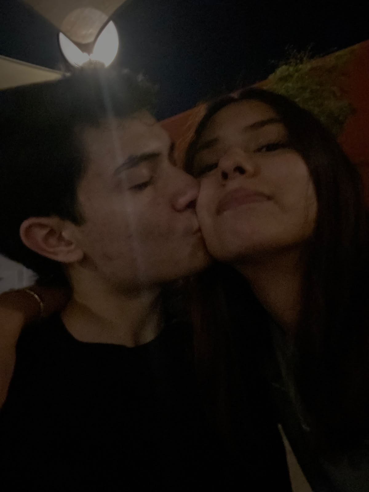
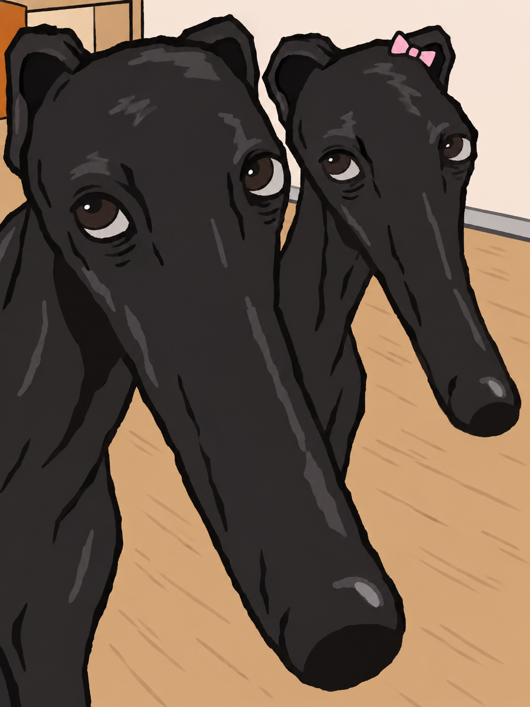

Un pequeño recordatorio
Qué bonito coincidir contigo.
Jennifer, gracias por cada sonrisa y por hacer tan especial este comienzo. Me hace feliz compartir mis días contigo, tardaron en llegar estos momentos, pero sin duda todo a valido la pena.
Este es nuestro primer mes y ya tengo muchas ganas de seguir sumando recuerdos a tu lado, sin duda alguna eres de lo mejor que me ha pasado en mucho tiempo, prometo cuidarte y quererte mucho, mucho mas de lo que te imaginas.
Con mucho cariño, tu novio ♡
Y se lo debemos gracias a:
Estos
